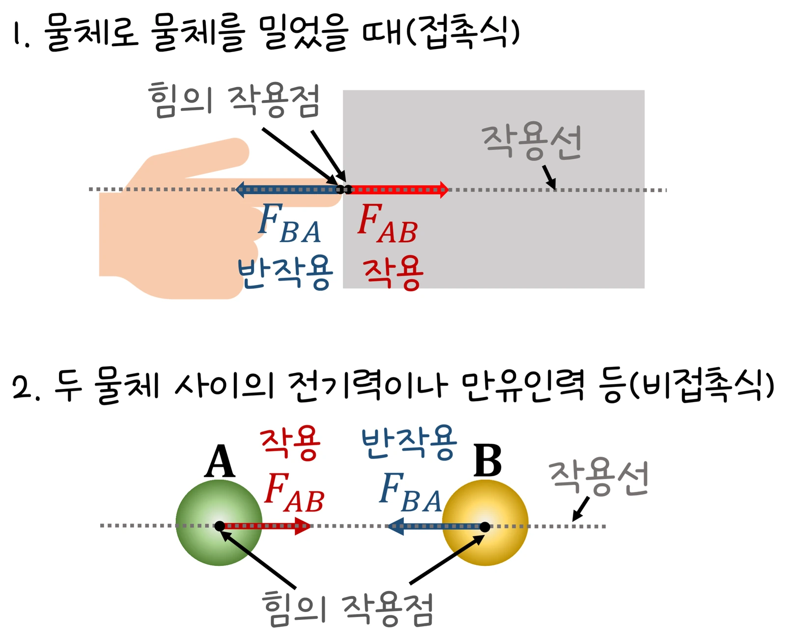

대학 일반물리 실험 1 · 4주차 · 뉴턴의 운동 법칙
실험에서 사람의 질량(40~100 kg)과 승강기 가속도 a(−9.8~+4.2 m/s², 위 +)를 바꿔 수직 항력 N과 체중계 눈금을 기록했습니다. 60 kg인 사람의 눈금은 a = +2에서 72.2 kg, a = −2에서 47.8 kg, 자유 낙하(a = −9.8)에서 0이었고, N/m − a 그래프는 기울기 1, 절편 9.80인 직선이었습니다. 자유 물체 도형, 제2법칙, 제3법칙의 짝을 정리합니다.
실험 데이터 되짚기
실험 안내: 사람의 질량 m 슬라이더(40~100 kg)와 승강기 가속도 a 슬라이더(−9.8~+4.2 m/s², 위쪽 +)를 정하고 승강기 움직이기를 누르면 m·a·N·눈금·N/m이 자동 기록됩니다. 음수·0·양수·−9.8을 포함해 가속도를 4가지 이상 기록하면 ✅ 데이터 검증 탭에 N/m − a 그래프(기울기·절편)와 기록별 눈금 막대가 나옵니다. 체중계 눈금은 N/g을 kg으로 표시한다고 가정합니다.
| m (kg) | a (m/s²) | N (N) | 눈금 (kg) | N/m (m/s²) |
|---|---|---|---|---|
| 60 | +2.0 | 708 | 72.2 | 11.80 |
| 60 | 0 | 588 | 60.0 | 9.80 |
| 60 | −2.0 | 468 | 47.8 | 7.80 |
| 60 | −9.8 | 0 | 0.0 | 0.00 |
| 80 | +1.0 | 864 | 88.2 | 10.80 |
무게 mg(60 kg이면 588 N)는 어느 줄에서나 같지만 체중계가 읽는 N은 N = m(g + a)로 바뀝니다. 질량으로 나눈 N/m은 질량과 상관없이 a + 9.80이 되어 한 직선(기울기 1, 절편 g)에 모입니다. a = −g이면 N = 0인 무중력 상태입니다.
N = m(g + a) — 체중계는 무게가 아니라 N을 읽습니다.
움직여 보기
승강기 속 체중계 — 눈금은 무게가 아니라 N을 읽는다
파란 N이 빨간 mg보다 길면 무겁게, 짧으면 가볍게 느낍니다. a = −9.8(자유 낙하)로 내리면 N이 사라집니다. 질량을 바꿔도 오른쪽 점은 같은 직선(기울기 1, 절편 9.8) 위에 있습니다. 초록 화살표는 출발 뒤 속도입니다. (g = 9.8)
N과 mg는 작용·반작용이 아닙니다(둘 다 사람에게 작용). N의 짝은 사람이 체중계를 미는 힘, mg의 짝은 사람이 지구를 당기는 힘입니다. 가속하는 승강기 안은 관성 기준틀이 아니라서 안에서는 "겉보기 중력" g + a 를 느낍니다.
교재 그림
작용·반작용 — 서로 다른 두 물체에 작용한다

작용과 반작용은 크기가 같고 방향이 반대이며, 서로 다른 물체에 작용합니다. 승강기 속 사람에게 작용하는 N과 mg는 둘 다 사람에게 작용하므로 이런 짝이 아닙니다 — N의 짝은 사람이 체중계를 미는 힘, mg의 짝은 사람이 지구를 당기는 힘입니다.
· 실제 승강기 가속도는 대략 1 m/s² 안팎이고 출발·정지할 때만 잠깐 가속합니다.
· 체중계 용수철이 흔들려 눈금이 잠시 출렁입니다.
g = 9.8 m/s², 위쪽 + · 60 kg: 정지 588 N, a = +2 → 708 N (72.2 kg)
N = 50 × (9.8 + 4.2) = 700 N, 눈금 = 700 ÷ 9.8 ≈ 71.4 kg. 무게 490 N보다 210 N(= ma) 큰 힘을 받아 무겁게 느낍니다.
N = 54 × 9.8 = 529.2 N, N/m = 8.82 m/s² → a = 8.82 − 9.8 = −0.98 m/s²(아래쪽). 아래로 내려가며 빨라지거나 위로 올라가며 느려지는 중입니다. 눈금은 속도가 아니라 가속도만 알려 줍니다.